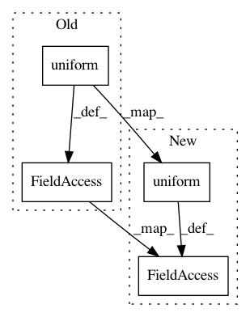

017fe07d01751011a054a081d9646d78081c9b3e,examples/mnist_acgan.py,,,#,127
Before Change
// generate some digits to display
num_rows = 10
noise = np.random.uniform(-1, 1, (num_rows * num_classes, latent_size))
sampled_labels = np.array([
[i] * num_rows for i in range(num_classes)
]).reshape(-1, 1)
// get a batch to display
generated_images = generator.predict(
[noise, sampled_labels], verbose=0)
// prepare real images sorted by class label
real_labels = y_train[(epoch - 1) * num_rows * num_classes:
epoch * num_rows * num_classes]
indices = np.argsort(real_labels, axis=0)
real_images = x_train[(epoch - 1) * num_rows * num_classes:
epoch * num_rows * num_classes][indices]
// display generated images, white separator, real images
img = np.concatenate(
(generated_images,
np.repeat(np.ones_like(x_train[:1]), num_rows, axis=0),
real_images))
// arrange them into a grid
img = (np.concatenate([r.reshape(-1, 28)
for r in np.split(img, 2 * num_classes + 1)
], axis=-1) * 127.5 + 127.5).astype(np.uint8)
After Change
// generate some digits to display
num_rows = 40
noise = np.tile(np.random.uniform(-1, 1, (num_rows, latent_size)),
(num_classes, 1))
sampled_labels = np.array([
[i] * num_rows for i in range(num_classes)
]).reshape(-1, 1)
// get a batch to display
generated_images = generator.predict(
[noise, sampled_labels], verbose=0)
// prepare real images sorted by class label
real_labels = y_train[(epoch - 1) * num_rows * num_classes:
epoch * num_rows * num_classes]
indices = np.argsort(real_labels, axis=0)
real_images = x_train[(epoch - 1) * num_rows * num_classes:
epoch * num_rows * num_classes][indices]
// display generated images, white separator, real images
img = np.concatenate(
(generated_images,
np.repeat(np.ones_like(x_train[:1]), num_rows, axis=0),
real_images))
// arrange them into a grid
img = (np.concatenate([r.reshape(-1, 28)
for r in np.split(img, 2 * num_classes + 1)
], axis=-1) * 127.5 + 127.5).astype(np.uint8)
In pattern: SUPERPATTERN
Frequency: 6
Non-data size: 4
Instances
Project Name: keras-team/keras
Commit Name: 017fe07d01751011a054a081d9646d78081c9b3e
Time: 2017-11-25
Author: ozabluda@gmail.com
File Name: examples/mnist_acgan.py
Class Name:
Method Name:
Project Name: keras-team/keras
Commit Name: f23f2ff2c96537274beb99aca8417f054f817501
Time: 2016-08-27
Author: francois.chollet@gmail.com
File Name: examples/neural_style_transfer.py
Class Name:
Method Name:
Project Name: catalyst-team/catalyst
Commit Name: f3946c57421b109c6d9abc2068da790a50ca7d62
Time: 2019-07-16
Author: scitator@gmail.com
File Name: examples/_tests_rl_gym/point_env.py
Class Name: PointEnv
Method Name: reset
Project Name: chainer/chainercv
Commit Name: f5ff0f5fb3933bb4e704ce7947e2bd5a99ef8358
Time: 2018-05-02
Author: Hakuyume@users.noreply.github.com
File Name: tests/links_tests/model_tests/yolo_tests/test_yolo_base.py
Class Name: DummyYOLO
Method Name: __call__
Project Name: chainer/chainercv
Commit Name: 389970fff42bbf094dcc494b6b7f00e1ebd6f800
Time: 2017-03-14
Author: yuyuniitani@gmail.com
File Name: tests/extensions_tests/detection_tests/test_detection_vis_report.py
Class Name: TestDetectionVisReport
Method Name: setUp
Project Name: chainer/chainercv
Commit Name: 7e8ecb773649e218a14fcef812983580e7a5912d
Time: 2018-05-15
Author: yuyuniitani@gmail.com
File Name: tests/experimental_tests/links_tests/model_tests/fcis_tests/utils_tests/test_mask_voting.py
Class Name: TestMaskVoting
Method Name: setUp